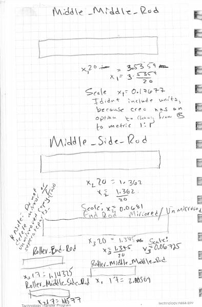
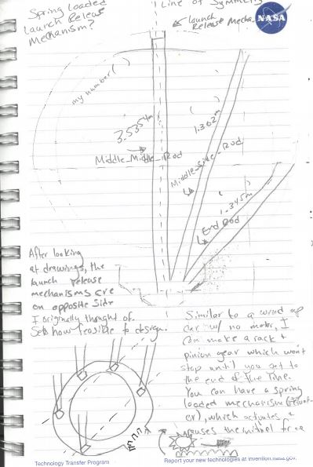
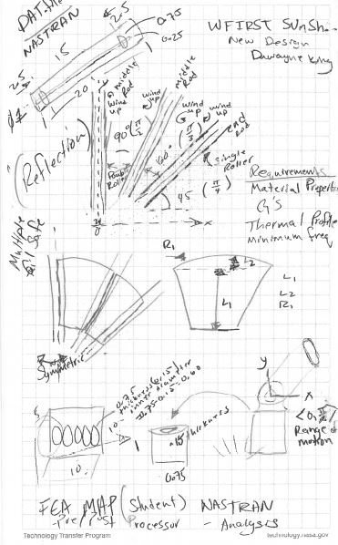
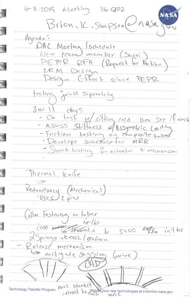
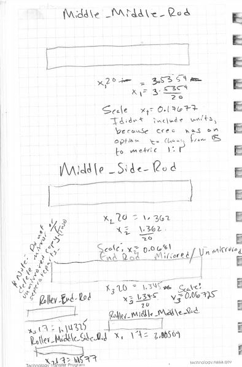
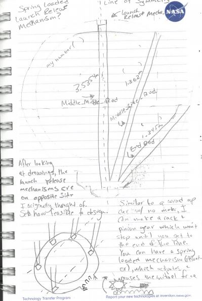
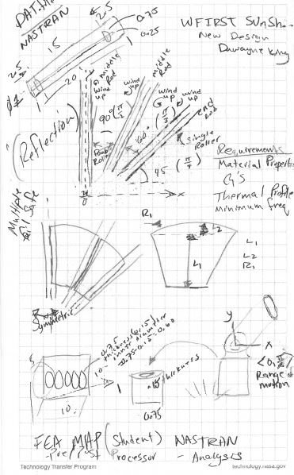
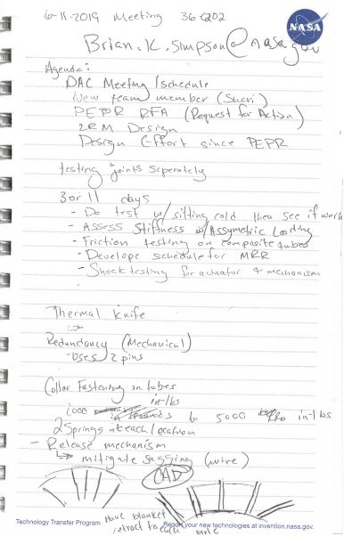

WFIRST Sunshield Concept
Engineering Drawings
In this section, you can view images for CAD Design of a concept I presented to NASA Goddard Space Flight Center while brainstorming how to keep the satellites sunshield blanket from jamming upon deployment. Originally, I thought of a mechanism to keep it from moving during launch; but with a focus of keeping little energy possible, I thought of a concept that uses its on tension to deploy and stow thermal blanket. With this, the release mechanism would simply deploy; and the tension of the blanket and forces will allow design to roll up from itself. This idea was just a prototype; and completed in two days of brainstorming. Original concept was modifed, without this design, and primarily built after my time at the center.


 






